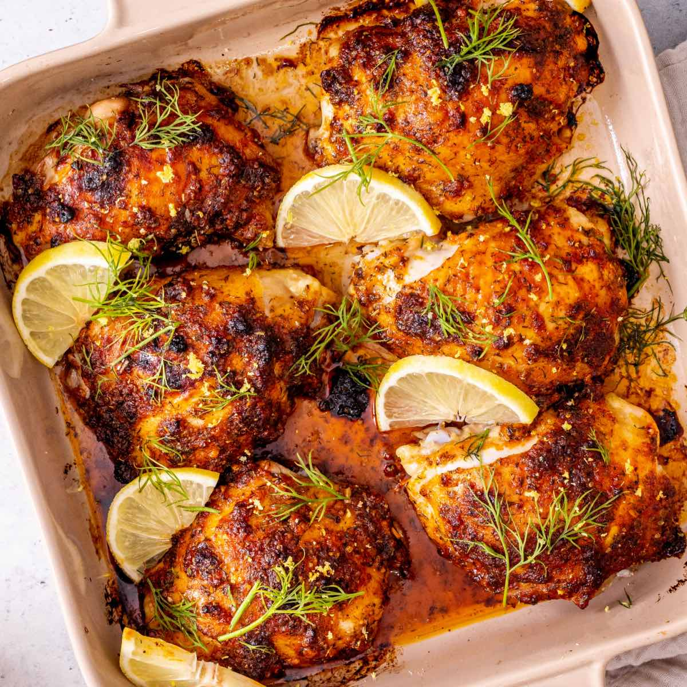

Baked Chicken

Description:
Baked chicken is a popular and versatile dish that can be prepared in various ways.
It is known for being easy to make and can be customized with different seasonings and marinades to suit your taste.
Ingredients:
- Boneless, skinless chicken breasts
- Olive oil or butter
- Salt
- Black pepper
Optional Seasonings
- Garlic powder
- Dried herbs (such as oregano, thyme, or rosemary)
- Lemon zest (for added brightness)
Steps to Bake Chicken
Preparation
- Preheat the Oven:
- Set your oven to 425°F (220°C).
- Prepare the Chicken:
- Pat the chicken dry with paper towels to help the seasoning stick.
- If using boneless, skinless chicken breasts, consider pounding them to an even thickness for uniform cooking.
- Season the Chicken:
- Use a mix of your favorite spices or a simple blend of olive oil, salt, and pepper.
- Optionally, brine the chicken in saltwater for at least 15 minutes to enhance moisture and flavor.
Baking
- Place in the Oven:
- Arrange the seasoned chicken on a baking sheet or in a baking dish.
- Bake for 18 to 25 minutes, depending on the size of the chicken pieces.
- Check for Doneness
- Use a meat thermometer to ensure the internal temperature reaches 165°F (74°C).
Resting
- Let It Rest:
- After removing the chicken from the oven, let it rest for 3 to 5 minutes. This allows the juices to redistribute, ensuring a tender and juicy result.
Home